| My First in 2025 | Fears |
|---|---|
| R package submission to CRAN. | Is my codes up to the maintainers' high standard ? |
| Attending R Dev Day. | Am I good enough to contribute to base R ? |
| Attending HAT Incubator session | Will people accept ideas and views of someone from a different hospital ? |
| Conducting a workshop during HAT conference | Will people accept things taught by a research officer who uses R ? |
| Submission to the Posit Table Contest | Is my table good enough from someone who does not do data visualisation ? |
My 2025 Year-In-Review
Table of Content
Introduction
2025 has been a year of many small progress and firsts for me. First package submission to CRAN. First time attending R Dev Day. First submission to the Posit Table Contest.
As the year comes to an end, it is time to acknowledge and celebrate these little achievements and milestones in my life.
Back to top

R package pretestcad
Since I joined National Heart Centre Singapore a few years ago, I had been working on an R package that consolidates different pretest probability scores for coronary artery disease into one library.
This R package is subsequently known as pretestcad.
This year, I managed to make this R package publicly available on CRAN and RUniverse.
I was also given a chance to present this R package in various conferences such as R/Medicine and R/Pharma and gave out some hex stickers during the useR! 2025 conference.
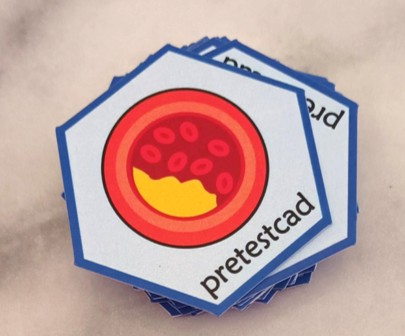
Back to top
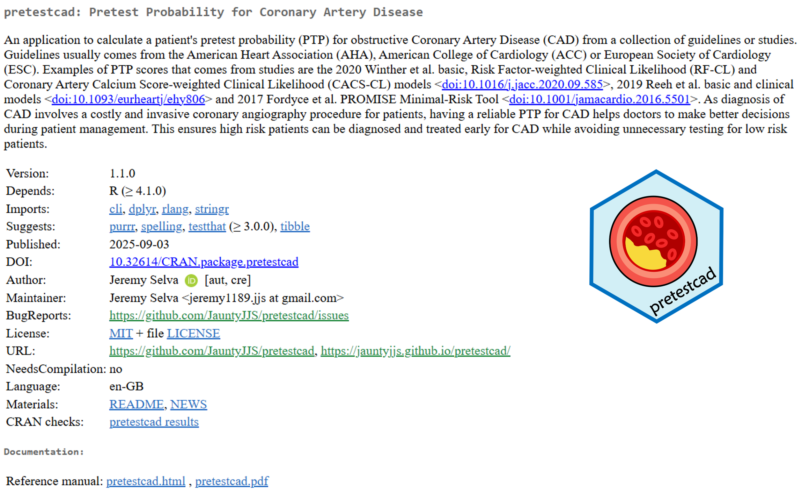

R User Group Singapore
Despite having limited resources, Nien Xiang and I were able to organise another R User Group meeting with three amazing talks.
- Practical Tips to Guide Your Colleagues from Closed Source to Open Source by Bella Ratmelia.
- Integrating Quarto into Teaching Practices by Gerard Chung.
- Beyond the Script: Unlocking the Power of R Packages by Zaw Myo Tun.
Though it is just one meeting this year, we hope that it cultivates meaningful relationships as we continue to plant seeds to grow the R community here.
Back to top

useR! 2025
2025 marks the 60th anniversary of Singapore’s independence.
Unfortunately, I had to miss its celebration on 9 August 2025 to attend the useR! 2025 conference at Duke University, Durham, North Carolina, United States of America, instead.
During the conference, I presented some tips on how to do clinical data harmonisation and create various reports/documentation showing how the harmonisation is done in an automated way.
Slides
Source Code
Despite missing the celebration back home, I found great joy during my trip in Durham.
I managed to catch up with people that I had met in useR! 2024 and made new connections along the way.
The conference and the R community also provided nice goodies to make the event more memorable.
Luck was also on my side as I have won a book signed by Jennifer Bryan, one of the authors, during a lucky draw,.
Back to top

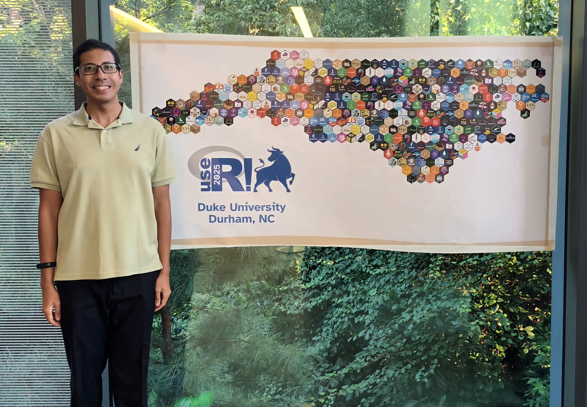

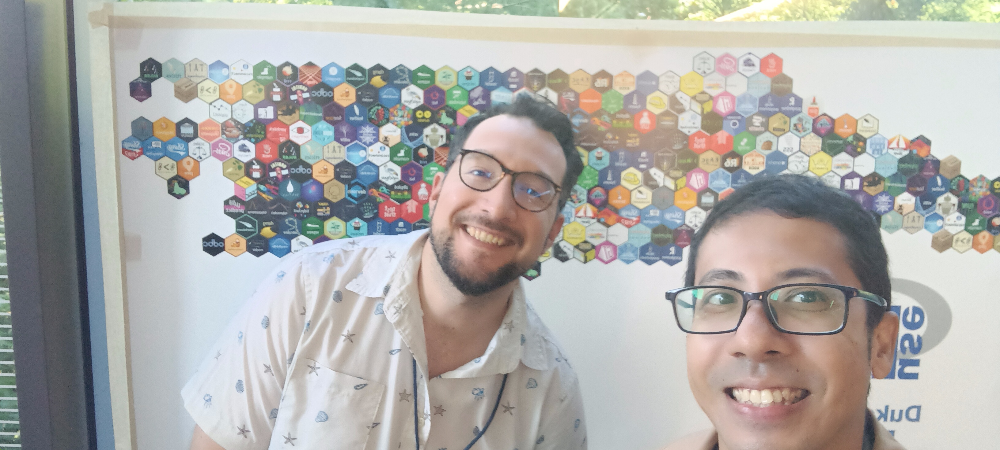
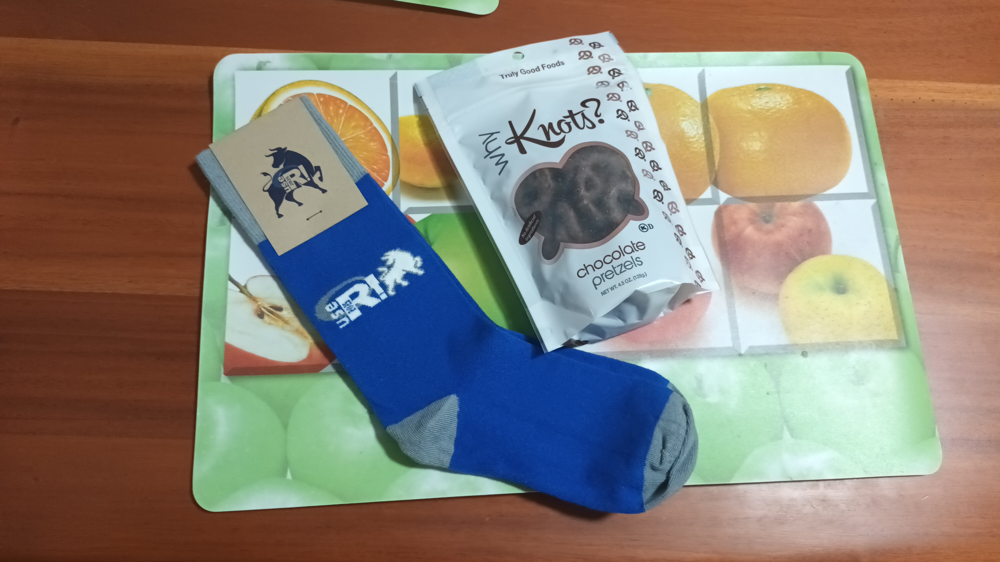

Posit Table Contest 2025
I also made my first table submission to the Posit Table Contest. The table tries to promote some Singapore places of interest while showing the number of visits during the past few years.
To my surprise, the table received a runners up position with the following comments.
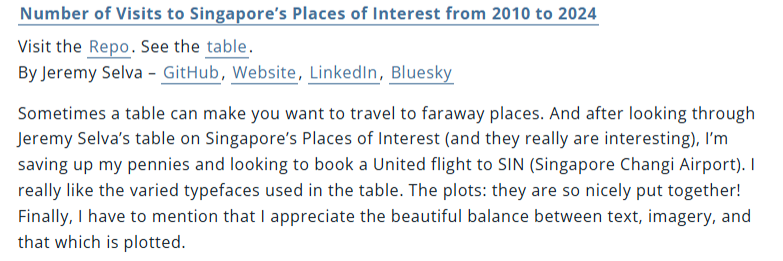
As such, I received some nice prizes from Posit,
including some hex stickers.
Back to top

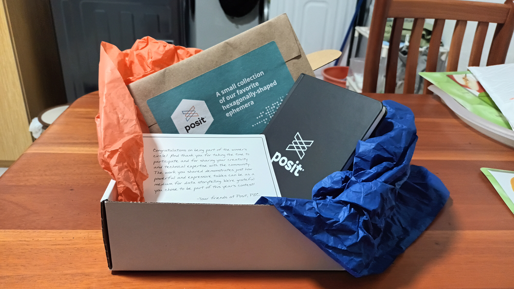
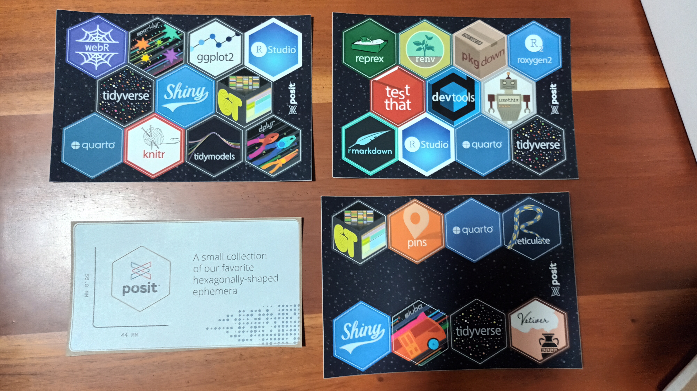
Reflections
I had to admit that these firsts were scary and I did have many self doubts.
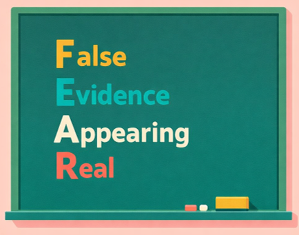
However, based on my reflections last year, I was reminded that there are people out there who would be interested in the work that I do, appreciate my talents and accept my shortcoming.
I began to realise that these firsts were actually opportunities given by God for me to improve myself by having more self love and courage to get up of my comfort zone.
As I took the leap of faith and tried something different or new, I realised that things were not as bad as I thought and I ended up benefiting myself and others more instead (based on my achievements this year).
Opportunities are always around but it can also be easily be seen as obstacles.
As fallible humans, it is normal to be fearful sometimes to push beyond our current boundaries, not knowing what lies ahead. When that happens, I remember a kind soul advising me to focus on all the reasons why I should carry on rather than gathering worries and excuses not to take the next step.
If things get too overwhelming, it is fine to pause and take things one step at a time. It is better to take things slow and steady than to stop and turn back.
I don’t know what 2026 will bring but I strongly believe that God has a beuatiful plan for me and you and hope is always on your side.
Indeed, each of us has the essential potential to do great things that can benefit our everyday lives. I hope that through this simple reflection, you will be motivated to pick yourself up and keep moving towards your inner desire and calling.
Wishing you all the very best in your journey.
Back to top

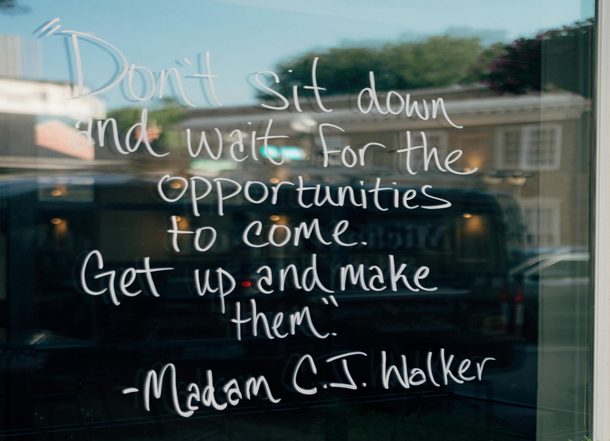
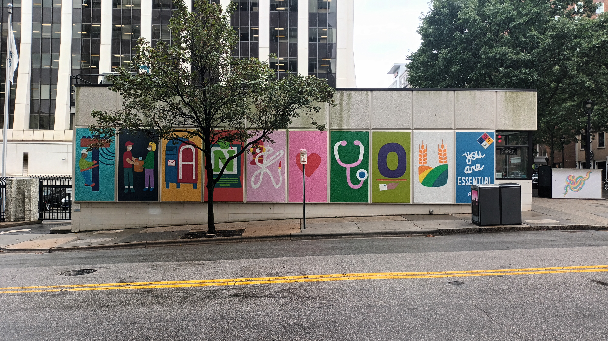
Meta Information
Soruce code can be found in this Github Page
Here are the R packages used.
Here is the R session used to generate this webpage.